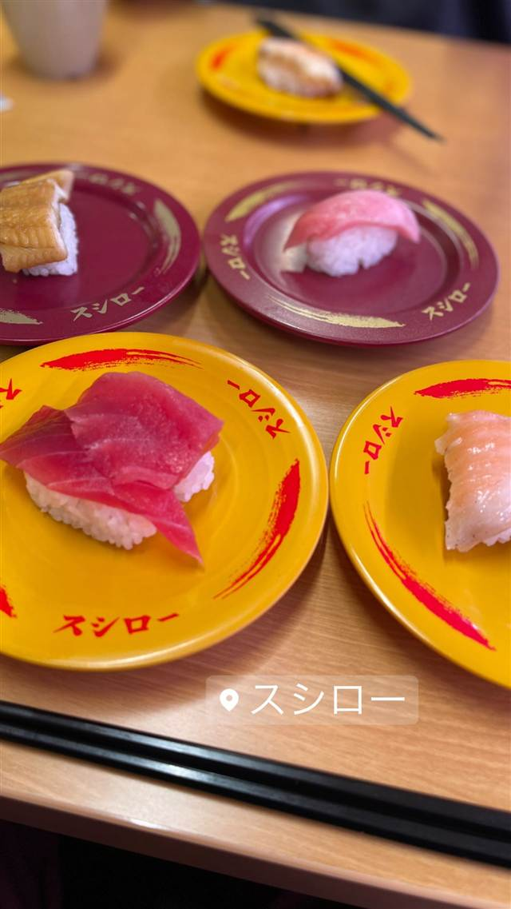

スシロー 相模原橋本店
大阪の立ち食い寿司がルーツ、全皿100円均一で広がった回転寿司
スシロー
大阪の立ち食い寿司「鯛すし」を営んでいた清水義雄が1984年に「すし太郎」1号店を出店したのが始まり。1995年に全皿100円均一の回転寿司として人気を博し、全国チェーン「スシロー」へと成長した。
TRIVIA
へえ、という話
- 社名「すし太郎」が永谷園の商品名と酷似していたためクレームを受け、社名を変更した経緯がある
- 2009年に並立していた「あきんど」と「スシロー」の店舗ブランドが「あきんどスシロー」に統一された
| 創業 | 1984年6月、大阪府豊中市に「すし太郎」1号店として創業（創業者・清水義雄） |
|---|---|
| 系譜 | 創業者は1970年代から大阪市でカウンター型の立ち食い寿司店「鯛すし」を営んでいた。1995年に全皿100円均一の店舗を展開し、のちに「あきんどスシロー」として統合された。 |
| 看板 | 回転寿司全般 |
| 予算 | 昼 ¥1,000～¥1,999 夜 ¥1,000～¥1,999 |
| 定休日 | 無休 |
| 予約 | 予約可 |
| 場所 | 橋本（徒歩18分） 神奈川県相模原市緑区西橋本4-8-48 |
| 注意 | 1995年から全皿100円均一を打ち出し、価格訴求で全国チェーン化した。 |
食べたもの：回転寿司 / 回転寿司店内
NEARBY
近い店・同じ系統の店
-
 回転寿司 目黒駅
回し寿司 活 活美登利 目黒店
梅丘の名店の回転寿司版、シャリが見えぬほど贅沢にネタを盛る穴子寿司
夜 ¥2,000～¥2,999
回転寿司 目黒駅
回し寿司 活 活美登利 目黒店
梅丘の名店の回転寿司版、シャリが見えぬほど贅沢にネタを盛る穴子寿司
夜 ¥2,000～¥2,999
-
 回転寿司 三軒茶屋
すし 台所家 三軒茶屋店（DAIDOKOYA）
渋谷初の回転寿司店の系譜、孤独のグルメ聖地の大トロにぎり
昼 ～¥1,999 夜 ～¥2,999
回転寿司 三軒茶屋
すし 台所家 三軒茶屋店（DAIDOKOYA）
渋谷初の回転寿司店の系譜、孤独のグルメ聖地の大トロにぎり
昼 ～¥1,999 夜 ～¥2,999
-
 回転寿司 二子玉川駅
廻転寿司 CHOJIRO 二子玉川店
京都発のにぎり長次郎、板前仕込みでカウンター級の回転寿司
昼 ¥3,000～¥3,999 夜 ¥4,000～¥4,999
回転寿司 二子玉川駅
廻転寿司 CHOJIRO 二子玉川店
京都発のにぎり長次郎、板前仕込みでカウンター級の回転寿司
昼 ¥3,000～¥3,999 夜 ¥4,000～¥4,999
-
 回転寿司 表参道駅
廻転鮨 銀座おのでら 本店
ミシュラン掲載の高級店が手がける、豊洲直送ネタの廻転鮨
夜 ¥4,000～¥4,999
回転寿司 表参道駅
廻転鮨 銀座おのでら 本店
ミシュラン掲載の高級店が手がける、豊洲直送ネタの廻転鮨
夜 ¥4,000～¥4,999
-
 定食・食堂 橋本
よしの食堂
1966年創業、壁一面50種類超のメニューが並ぶ孤独のグルメのロケ地
昼 ～¥999 夜 ～¥999
定食・食堂 橋本
よしの食堂
1966年創業、壁一面50種類超のメニューが並ぶ孤独のグルメのロケ地
昼 ～¥999 夜 ～¥999